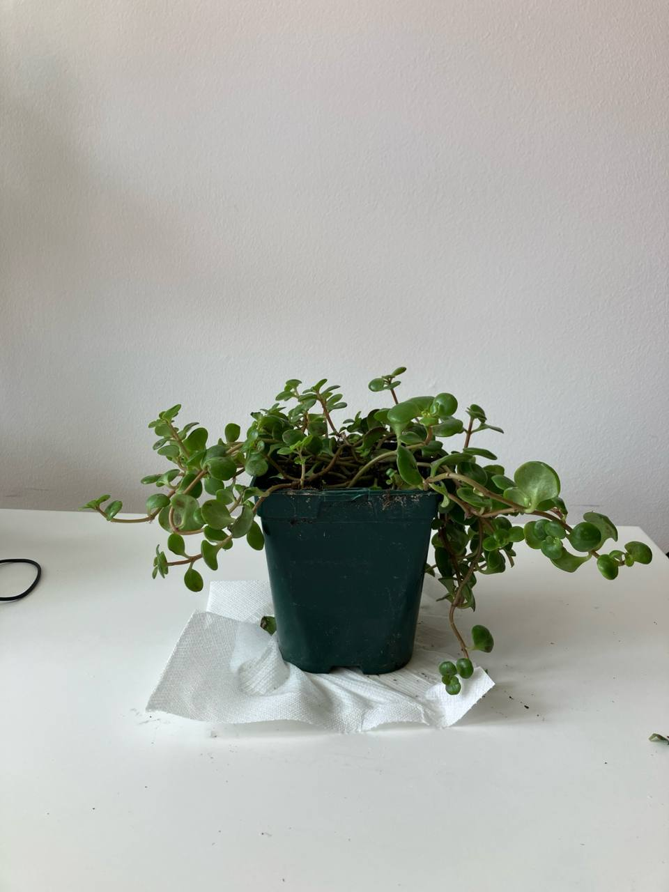

Activity
- Scheduled
- Feeding 01-09-2024
Sedum Makinoi Plant Care Guide
Environment
Light
- Bright Light: Sedum Makinoi thrives in bright light. It can tolerate full sun to partial shade, but it performs best in full sun. If grown indoors, place it near a sunny window.
Soil
- Well-Draining Soil: Use a well-draining soil mix, such as cactus or succulent soil. Adding sand or perlite can help improve drainage.
Temperature
- Temperature Range: Sedum Makinoi prefers temperatures between 65-75°F (18-24°C) but can tolerate temperatures as low as 50°F (10°C). It should be protected from frost.
Routine jobs
Watering
- Watering Schedule: Water the plant sparingly. Sedum Makinoi is drought-tolerant and prefers the soil to dry out between waterings. Overwatering can lead to root rot.
- Watering Method: Water the soil directly and avoid getting the leaves wet to prevent mold and rot.
Feeding
- Fertilization: Fertilize sparingly. Use a balanced, diluted liquid fertilizer once a month during the growing season (spring and summer). Avoid fertilizing in the winter.
Potting
- Container Choice: Choose a pot with drainage holes to prevent waterlogging. Sedum Makinoi can be grown in small pots or as ground cover in larger containers.
- Repotting: Repot only when necessary, usually when the plant outgrows its container or the soil becomes compacted.
Troubleshooting
- Common Pests: Watch for common pests such as aphids, mealybugs, and spider mites. Treat infestations promptly with insecticidal soap or neem oil.
- Leaf Care: Remove any dead or damaged leaves to keep the plant healthy and prevent disease.
Propagation
- Propagation Methods: Sedum Makinoi is easy to propagate. It can be propagated through stem or leaf cuttings. Allow the cuttings to dry and callous over before planting in well-draining soil.